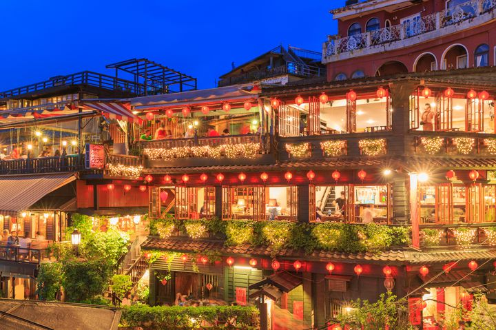

Jiufen(Taiwan)

Jiufen, Taiwan, is a small mountain town that has gained international fame for its connection to the beloved Japanese animated film, Spirited Away. The film's fictional setting of the magical bathhouse is said to have been inspired by the town's historic teahouses and winding alleyways. Visitors to Jiufen can explore the town's narrow alleys lined with traditional red lanterns and visit A-Mei Teahouse, which served as the inspiration for Spirited Away's bathhouse. The town has embraced its connection to the film and has even hosted Spirited Away-themed events and sold merchandise. Jiufen is also known for its rich history, beautiful temples, and stunning natural scenery, making it a unique destination that blends history, culture, and fantasy.
Yakushima(Japan)


Yakushima is a small island off the southern coast of Japan known for its dense forests, rugged terrain, and diverse wildlife. The island was the inspiration for the setting of the acclaimed Japanese animated film, Princess Mononoke, directed by Hayao Miyazaki. Visitors to Yakushima can explore the island's dense forests, hiking trails, and visit the Yakusugi Museum, which showcases the island's ancient cedar trees and unique ecology, as well as its connection to the production of Princess Mononoke. Yakushima's natural beauty, unique culture, and stunning landscapes make it a truly magical destination, captivating visitors from around the world with its enchanting atmosphere and mystical charm.
dubrovnik(Croatia)


Dubrovnik, Croatia is a coastal town that has become famous for its connection to the Japanese animated film, Porco Rosso, directed by Hayao Miyazaki. The town's well-preserved medieval architecture, narrow streets, and stunning coastal views served as major inspiration for the film's setting. Visitors to Dubrovnik can explore the town's historic landmarks and medieval walls, which offer panoramic views of the town and the sea. The nearby island of Lokrum also served as a filming location for the movie, and its lush vegetation and rocky coastline were used to create the film's stunning aerial scenes and dramatic dogfights. In addition to its association with Porco Rosso, Dubrovnik is also known for its rich history, vibrant culture, and stunning natural beauty, making it a popular destination for tourists from around the world.